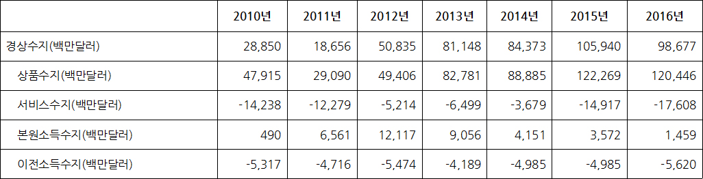
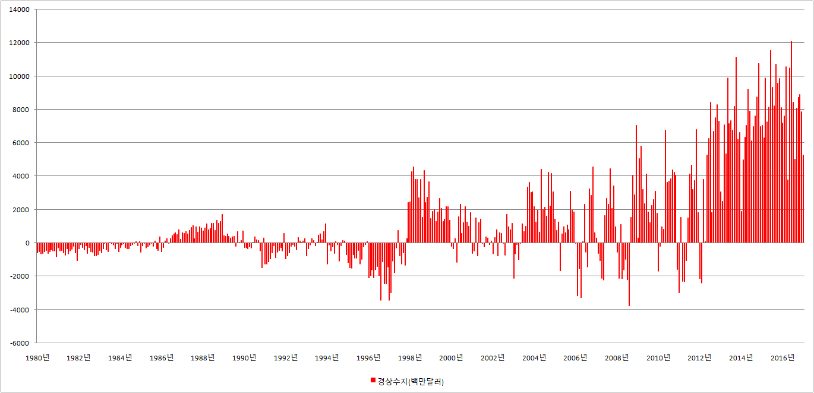
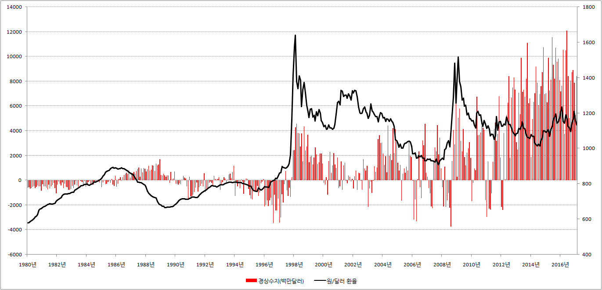
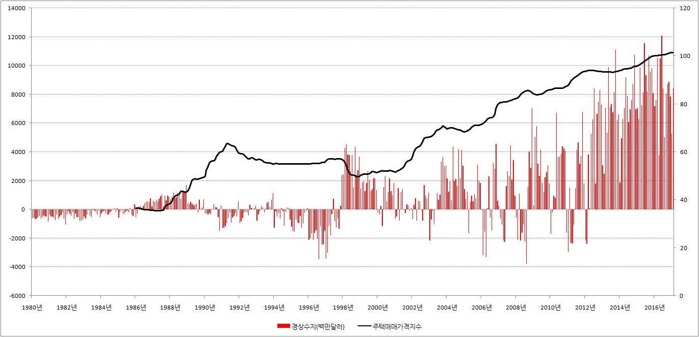
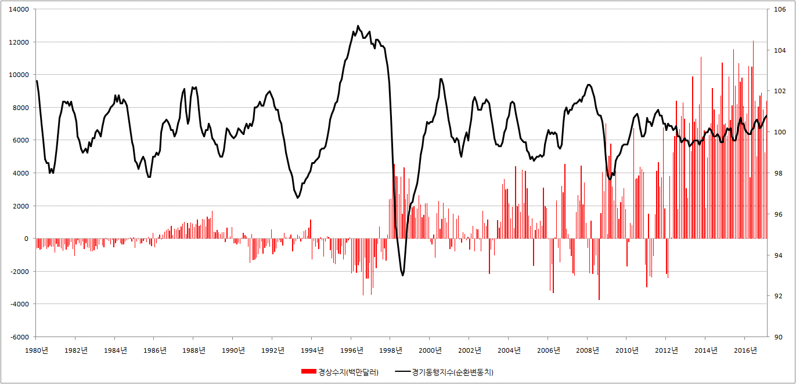

■ 경상수지
1.경상수지 뜻
경상수지란 ‘경제적으로 항상 있는 거래로부터 발생한 수지타산’을 뜻합니다. 쉽게 말해서 경상수지란 우리가 먹고, 마시고, 즐기는 과정에서 해외에 뿌린 돈이 더 많은지, 아니면 벌어들인 돈이 더 많은지 조사를 한 것입니다.
이때 우리가 해외에 수출한 것보다 수입한 것이 더 많다면 경상수지 적자라 말하고, 해외에 수출한 것이 수입한 것보다 더 많다면 경상수지 흑자라 말합니다.
예를 들어 우리가 수출한 물건의 가격이 모두 70원이고, 수입한 물건의 가격이 모두 100원이라면 30원의 경상수지 적자가 발생했다고 합니다.
하지만 우리가 수출한 물건의 가격이 모두 100원이고, 수입한 물건의 가격이 모두 70원이라면 30원의 경상수지 흑자가 발생했다고 합니다.
보통 신문과 방송에서 말하는 '국제수지 적자'와 '국제수지 흑자'는 '경상수지 적자'와 '경상수지 흑자'를 가리키는 말입니다. 국제수지를 구성하는 수많은 항목 중에서 경상수지를 이처럼 특별 대우해주는 이유는 간단합니다. 국제수지의 엑기스라 할 수 있는 상품수지가 경상수지에 포함되어 있기 때문입니다.
2.경상수지의 분류
경상수지는 크게 봐서 상품수지, 서비스수지, 본원소득수지, 이전수지로 나누어집니다.
▶ 상품수지 : 상품거래를 하는 과정에서 우리가 얼마나 남겨 먹었는지 조사를 한 것이 상품수지입니다. 쉽게 말해서 우리가 해외에 판 핸드폰, 반도체, 연필, 지우개 등이 더 많은지, 아니면 우리가 구입한 외제가 더 많은지 조사한 것이 상품수지입니다.
이때 우리가 팔아먹은 것이 더 많다면 상품수지 흑자라 말하고, 우리가 구입한 것이 더 많다면 상품수지 적자라 말합니다.
▶ 서비스수지 : 서비스를 주고 받는 과정에서 우리가 얼마나 남겨 먹었는지 조사를 한 것이 서비스수지입니다. 쉽게 말해서 우리가 해외여행을 하면서 뿌린 돈이 많은지 외국인이 우리나라에 뿌린 돈이 많은지 조사를 한 것입니다. 이때 우리가 해외에 뿌린 돈이 더 많다면 서비스수지 적자라 하고, 외국인이 우리나라에 뿌린 돈이 더 많다면 서비스수지 흑자라 합니다.
서비스수지의 세부 항목으로는 여행수지, 건설수지, 보험서비스수지, 금융서비스수지, 운송수지 등이 있습니다.
▶ 본원소득수지 : 임금이나 배당, 이자 등으로 우리가 얼마나 남겨 먹었는지 조사를 한 것이 본원소득수지입니다. 쉽게 말해서 우리나라 노동자가 해외에서 번 돈이 더 많은지, 아니면 외국인이 우리나라에서 번 돈이 더 많은지 조사를 한 것 입니다.
▶ 이전소득수지 : 댓가 없이 오고 가는 돈을 추적한 것이 이전소득수지입니다. 쉽게 말해서 우리나라가 해외에 기부한 돈이 더 많은지, 아니면 외국인이 우리나라에 기부한 돈이 더 많은지 조사한 것입니다.
※ 한국 경상수지 표

{kind=link}
※ 한국 경상수지 그래프

{kind=link}
3.경상수지와 한국경제
경상수지가 한국 경제에 미치는 영향이 궁금하신 분들을 위해 몇개의 그래프를 첨부합니다. 아래 그래프를 보시고 경상수지가 물가, 금리, 환율, 주가, 집값, 경기에 미치는 영향을 스스로 한번 분석해 보십시오.
{kind=link}
{kind=link}
※ 경상수지와 원/달러 환율

{kind=link}
{kind=link}
※ 경상수지와 주택매매가격지수

{kind=link}
※ 경상수지와 경기동행지수(순환변동치)

{kind=link}
4.경상수지 조회
한국은행 경제통계시스템에서 경상수지 관련 자료를 조회할 수 있습니다.
※ 한국은행 경제통계시스템 → 8. 국제수지 / 외채 / 환율 → 8.1 국제수지